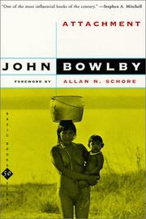

Attachment (Attachment and Loss, Vol. 1)
Book·John Bowlby, 1969·依恋（《依恋与丧失》第一卷）

A classic statement of attachment theory. It is long and better suited to readers with some background.
- Author
- John Bowlby
- Year
- 1969
- Difficulty
- Advanced
- Kind
- Primary text
- Schools
- Attachment Theory
- Core theories
- Attachment Behavioral System
Editions
- Chinese edition 《依恋三部曲•第一卷 依恋》 [英]约翰•鲍尔比 · tr. 汪智艳 / 王婷婷 · 世界图书出版公司 · 2017 Douban 8.6 (449 ratings) Douban page ↗
- English edition Attachment (Attachment and Loss, Vol. 1) John Bowlby · Basic Books, second edition with new preface · 1982 Open Library ↗